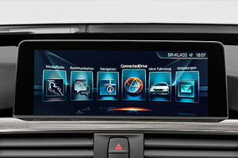

如先前《人生的第一臺Mercedes-Benz，B180直購直測結案報告》中所提到的，父親的Mercedes-Benz B 180使用屆滿3年前，我開始尋找父親的下一部車。
最後，我選定了BMW 218i Active Tourer，除了一圓父親的「雙B夢」以外，更能夠對於這兩款車型所呈現出截然不同的產品特質，有了深刻的體會。因此筆者在此再度撰文，藉由U-CAR「直購直測」單元，與讀者們分享購入BMW 218i Active Tourer後的使用體驗。
鎖定BMW品牌、一圓父親的「雙B夢」
在臺灣，「雙B」指的是德系豪華品牌Benz、BMW的簡稱，是代表台灣豪華車級距的鮮明標籤。因此，打算換掉先前的Mercedes-Benz B 180時候，下一款車，便鎖定了以BMW品牌為選購方向。
小型跨界車當紅，原以X1作為購車目標
但原本的購車目標，並非最終購入的BMW 2 Series Active Tourer。考量父親的年紀，避免挑選車身尺碼太大的車款，但又需要有不錯的空間機能。一開始，鎖定的反而是BMW X1。原本的B 180、車格上屬於小型MPV級距，車身投影面積雖小，但較大的車身高度，創造出相當便利的空間機能。若以同樣的選車思維，尺碼相若、卻能提供不同視野的小型跨界SUV車，似乎也是不錯的選擇。
2 Series AT雀屏中選
在看車的過程中，我靈機一動，想說父親之前開B 180，或許在市場上與B-Class 產品定位相近的2 Series Active Tourer，說不定會更符合家父的用車習慣，帶家父進展間時，便一併將2 Series Active Tourer納入可能的購車名單之一。
進入展間後，我帶著父親實際看了X1、2 Series Active Tourer。而一如之前的推測，家父確實已習慣於先前B 180的車身大小、以及在車內與轎車更為接近的著坐點，空間機能方面2 Series Active Tourer亦有著與B 180相同的表現，最後，父親選定了2 Series Active Tourer。
而從市場定位及價格面來看，較晚推出的BMW X1，因國內近期興起的跨界車、SUV浪潮，在銷售情況上相當穩定、少有庫存車，亦與較早登場的2 Series Active Tourer間產生一定的替代效應。所以在展間的議價部分，目前X1的折扣空間較少，而早先上市的2 Series Active Tourer，則有更多的優惠可供選擇，甚至現金折讓上的空間也更充足。
就鎖定的218i Active Tourer與X1 sDrive18i而言，目前的建議售價分別為159萬、175萬，兩者間在定價上就已有16萬元的差距，進入展間後的議價空間差距更是顯著。在考量家父的偏好與使用需求後，最終由218i Active Tourer順利出線，成為父親人生擁有的第一款BMW。
總代理推出都會特式車型，配備取捨成考量因素
在確認車款為218i Active Tourer後，車型與配備的選擇，也讓我費了一番功夫思量之後，才做了決定。
因為BMW國內總代理汎德汽車於2016年9月中旬，特別針對旗下118i以及218i Active Tourer這兩款車型，分別推出售價142萬 (預售優惠價139萬)、150萬 (預售優惠價147萬) 的都會版特仕車，來提升市場競爭力。
而218i Active Tourer都會特式車在配備設定上，較售價159萬的標準版車型，多了M款多功能真皮方向盤、Comfort Access免鑰匙系統含感應式電動尾門啟閉，卻也相對刪去了實用的倒車顯影、雙前座電動座椅、後座可調式空間系統、以及定速控制等配備。
其中，讓父親與我最難取捨的，便是倒車顯影這項配備，畢竟倒車顯影對停車的便利性相當顯著，而購車時又覺得都會特式車的電動尾門亦非常實用。

因此，最終下訂時，決定選擇的是標準版車價159萬基礎上、再加價11萬的218i Active Tourer豪華選配版，因此車價提高至170萬元。配備上，有感應式電動尾門啟閉，也比都會特式版多了原廠中文衛星導航、造型更為美觀的17吋雙輻式輪圈，內裝上黑色高光澤飾板也讓車室豪華質感加分。
車色方面，父親屬意地中海深藍色 (Mediterranean Blue)，由於不是灰黑銀白等大眾車色，因此特別請經銷商查詢庫存狀況。最後，找到一輛16/16年式 (2016年生產，2016年式) 的現車，經銷商直接給我了149萬元報價。
訂車的過程非常順利，且有些幸運。由於此刻正是年式交接的時節，車廠為了加速去化舊年式庫存車輛，通常會給予不同年式有若干價差。接洽的業務人員表示，若是想要的車色已無16/16年式庫存時，就得改訂16/17年式 (2016年生產，2017年式)，即使二者配備並無任何差異，必須加價4萬元。
BMW首款前驅UKL2平臺作品，聚焦主要對手B-Class
原廠底盤代號為F45的2 Series Active Tourer，除了與1 Series共同擔綱BMW入門車系的要角以外，更是品牌首款採用前輪驅動設定、搭載UKL2模組化底盤平臺的作品。開發之初，一改品牌一貫的後驅傳統，以便利性更具優勢的前驅模組化平臺，降低機械佔據車室的影響，讓旗下新世代的小型車款，得以擁有更寬廣的乘坐及活動空間，而2 Series Active Tourer此舉聚焦的主要對手，就是Mercedes-Benz B-Class。

與B 180家庭實用風格不同，218i Active Tourer流露品牌動感元素
而與家父入手218i Active Tourer後，不免就將其與B-Class進行比較。從外觀來講，舉凡LED頭燈含轉向輔助燈、雙環式LED日間行車燈，配合BMW品牌向來堅持的招牌雙腎型水箱護罩、肌理動感設計，皆與B 180的家庭實用風格有所不同。
標配Comfort Access免鑰匙系統，使用邏輯清晰明瞭
另外，218i Active Tourer所標配的Comfort Access免鑰匙進入、啟閉系統，亦是亮點之一。就主要競爭對手Mercedes-Benz來看，目前國內販售的車系包括B-Class在內，若要擁有免鑰匙進入功能，多半都得另行加價選配。
加價選購，整合踢腳感應式電動尾門
2 Series Active Tourer卻在全車系標準版的車型上，即擁有免鑰匙配備的設定，而且BMW這套Comfort Access系統，設計一套清楚的操作邏輯。開門時，只要將手掌伸進門把即可感應解鎖；鎖車時，則是觸控按壓門把上的按鍵。若是不太確定車門是否上鎖，則可以透過「長按」門把觸控按鍵，直到後視鏡收折，便可清楚辨別車輛已安全上鎖。而豪華選配版的感應式電動尾門，便利性亦讓筆者眼睛為之一亮。
自動路邊停車、全車雷達、倒車顯影輔助，配備誠意十足
2 Series Active Tourer全車系另一項令人驚艷的標準配備，則是自動路邊停車系統。誠然家父日常於屏東市區代步時，並未曾啟用這項功能，但伴隨自動路邊停車系統多處的雷達，搭配218i Active Tourer標準版以上搭載的倒車顯影，讓父親自行停車時也能多一道保障，大幅降低停車時發生碰撞的風險，一輛品牌入門車系擁有這麼多停車科技配備，誠意十足。
瞄準NGCC家族而來，2 Series Active Tourer內裝質感技高一籌
一坐進車室，就能感受到BMW原廠針對2 Series Active Tourer車室質感所下的功夫。因為Mercedes-Benz麾下B-Class等NGCC新世代小型車家族，先前即透過年輕化元素的注入，在市場上獲得相當成功的迴響。

為與之相抗衡，除了多樣化的置物空間，BMW亦替2 Series Active Tourer車室內多處施以皮質、軟質塑料、外露縫線等材料包覆，218i Active Tourer豪華選配版更搭載了黑色高光澤飾板含銀色飾條，在色澤與質感的呈現上，比起前一輛車款B 180更加的豐富，超越了入門車款的表現。甚至，就算是與BMW更高一階的3 Series相較，2 Series Active Tourer的內裝質感仍舊勝出。
原廠衛星導航整合iDrive系統，車內收音品質成亮點
內裝配備上，因為選擇了加價的豪華選配版，中控臺中央搭載原廠衛星導航的iDrive操作介面，自然是焦點所在，搭配下方的iDrive旋鈕與按鍵，以及豐富的多功能方向盤，操作直覺度上非常容易上手，甚至在車內藍牙電話的通話質感、收音品質，比起筆者先前自身的座駕520 d都更為優異。
2016年式開始生產的2 Series Active Tourer，亦匹配了BMW原廠互聯駕駛功能，方便車主緊急求救或與服務廠聯繫；唯獨iDrive旋鈕部分，豪華選配版未採用更為高階的觸控手寫板，在導航景點的輸入時稍嫌繁瑣，則較為可惜。
後座座椅變化豐富，前驅底盤增加後座活動空間
從整體的車內空間來看，218i Active Tourer後座中央減緩了傳統BMW後驅車款較大的隆起，再輔以都會特式車所沒有的後座可調式空間系統，可以讓後排座椅擁有3段式傾斜調整、進行多達13公分的滑移，確實都有著不亞於B 180的空間機能。原廠資料亦顯示其後排座椅未傾倒前，即提供460公升的行李廂容積，後排完全傾倒過後更可擴充至1,510公升之譜。
218i Active Tourer座椅乍看單薄，支撐性仍相當不俗
在分享動態駕馭感受前，首先要提及的是座椅的表現，父親先前的B 180就兼顧到Mercedes-Benz品牌一貫的舒適性，椅面更為寬廣、厚實。而218i Active Tourer乍看之下，其圓弧型的座椅造型看起來有些單薄、有點像是坐在「小凳子」上。但實際乘坐後，雖不如B 180般舒適，卻可發覺其座椅支撐性仍相當不俗，若前排座椅另加價選擇有腿部延伸支撐的座椅，相信長途行駛的疲勞感會更為降低。
1.5升渦輪直列3缸引擎，供輸最大馬力136匹
從帳面上的動力數據來講，218i Active Tourer匹配的1.5升TwinPower Turbo渦輪直列3缸引擎，佐以6速Steptronic手自排的驅策下，可於4,400轉時提供136匹的最大馬力輸出，並於低轉速域的1,250轉、供輸22.4 公斤米的最大扭力，都比起122匹/20.4公斤米的B 180更為出色。
品牌造車理念迥異，BMW強調動態駕馭感受
實際上路後，因為造車理念的差異，BMW品牌的車款泰半多會強調動態的駕馭感受。218i Active Tourer也是如此，與家父先前的B 180相比，218i Active Tourer油門踩踏的質感較為沉重，不像B 180般輕盈，引擎運轉聲浪也較明顯，讓父親一開始駕馭時有些不太適應。
1,250轉輸出最大扭力，「Comfort」模式就很猛!
但在加速性表現方面，136匹馬力、車重1,360公斤的218i Active Tourer，雖稱不上有著強烈的貼背感，卻在市區加速感受比起B 180更為猛烈，因為其22.4 公斤米的最大扭力，在低轉速1,250轉的好球帶就會輸出，即使從車上「Eco Pro」、「Comfort」、「Sport」三種動態行車模式中，選擇較為溫順的「Comfort」模式，亦會提供充足的加速感受，這是BMW品牌車款特別的一面。
一改前驅車轉向不足調性，過彎指向性犀利
轉向精準度則是BMW品牌所著墨的重點，在都會區以稍快的車速轉向，218i Active Tourer的EPS電子動力方向盤會給予穩定的轉向輔助，從「Eco Pro」、「Comfort」、「Sport」三種模式依序提供更為緊緻的轉向質感。而既使是前驅底盤的設定，日常操駕也並不會呈現車頭向彎外跑的轉向不足，緊緊跟著駕駛的預期的方向行駛、過彎指向性犀利，足見為保持跟BMW傳統後驅車款相若的操駕樂趣，原廠針對UKL2底盤平臺的設定，亦下足了不少工夫。
電子式手煞車增添實用性，6速手自排足敷代步使用
駕駛的介面來看，電子式手煞車、定速系統的加入，提升日常駕駛的實用便利性，但最入門的218i Active Tourer並未提供更熱血的方向盤換檔撥桿，則稍微可惜了一點。
因為比起筆者先前使用的520 d，218i Active Tourer並非搭載更多檔位的8速Steptronic手自排、而是6速Steptronic手自排，加速時的降檔反應自然未及8速手自排齒比來的綿密、迅速，操作上若有換檔撥片輔助會更佳。好在218i Active Tourer換檔邏輯仍算是相當聰明，都會行車時會將轉速控制在2,000轉以下，對於平時僅用於屏東市區代步的父親而言，已相當足敷使用。
底盤偏向駕馭樂趣著墨，給予駕駛者極大信心
值得一提的是，先前筆者在撰寫B 180直購直測時，便曾提及B 180於高速或直線長時間行駛時，比起現在的218i Active Tourer，確實有著Mercedes-Benz期望讓駕駛者放鬆、享受舒適不疲勞的行車質感；而218i Active Tourer則更偏向駕馭樂趣做著墨，除了方向盤路感的回饋清晰，側傾的抑制上，展露不曾出現在高頂化車型的安定性，高速行駛的狀態下後軸也較為穩定，給予駕駛者極大的信心。
新車仍處摩合期，平均油耗約每公升10.98公里
油耗表現部分，由於218i Active Tourer目前僅行駛約1,370公里、仍處於磨合期，行車電腦上顯示的平均油耗為9.1 L/100 km，換算後約為每公升汽油可行駛10.98公里，比起B 180最終轉售時紀錄的每公升11.49公里，稍微居於下風。但相信後續在車輛機件及換檔學習模式，逐漸磨合、調整後，平均油耗表現，會更接近能源局測得每公升14.7公里的數據。
超越入門級表現，218i Active Tourer處處「升級」
整體而言，我與父親皆會給予218i Active Tourer高度肯定。動態的感受方面，前一輛B 180前軸舒適、但後軸懸吊行程相對較短，讓路面跳動較容易反饋到後座的情況，在218i Active Tourer上則不復見。後軸的靈活性、吸震性、路面坑洞的處理，218i Active Tourer皆調校出更為精緻的行路質感。
再來，空間表現部分，實際比較下，B 180的乘坐空間、行李廂空間，比起218i Active Tourer略為大上些許，但218i Active Tourer透過座椅機能，以及後廂底板下因採用失壓續跑胎而騰出的隱藏置物空間，空間表現上尚不至於遜色太多。
因此，綜觀此次購入的218i Active Tourer，雖然跟之前使用的B 180在車身尺碼、產品級距定位相當。但不管從配備豐富度、動力水準、內裝的豪華感來看，品牌入門車款定位的218i Active Tourer，卻處處都有著「升級」的感覺。
換個角度來看，這樣的升級感受其實也是理所當然。B-Class是Mercedes-Benz新世代小車產品NGCC的第1款產品。從B-Class的與前代產品全面不同的設計，B-Class無疑是嚐試之作。
B-Class的成功，證明了這類產品需求的市場存在，也讓B-Class再次成為全新級距的定錨產品，為全新級距設下了標準。
B-Class獲得市場的成功後，不論是消費者的口味、此級距該有的產品力，從此有了清晰的輪廓。甚至，攸關成本採算的銷售量規模，也更容易掌握。毋須承擔市場不確定風險的情況下，身為後進者的2 Series Active Tourer，要端出一盤精緻的好菜，能足以與B-Class抗衡，自然要比起開創新級距來得容易。
雖然執行起來不一定容易，但競爭的策略說來簡單，就是比起市場上最成功的產品，再更好一些，就行了。
入手一個月以來，實際上使用218i Active Tourer的體驗，BMW的確做到了。
-

享60期0利率、低月付，BMW「榮耀創新專案」11月加碼實施中
BMW總代理汎德表示，11月份持續加碼實施2017年式BMW車型「榮耀創新專案」，凡11月交車領牌者另享特定車型優惠價格升級駕駛輔助套件、盲點偵測警示等配備...
-

趁勝追擊─BMW 2 Series Gran Tourer斯洛維尼亞試駕，市場沿革篇
當一輛車的銷量，其中能有70％是新客戶，那怕它備受爭議，就車廠營利的角度來看，就是一款相當成功的作品。今天我要提及的這輛車，同樣備受爭議也考驗市場口味，它就是BMW 2 Series Active Tourer/2 Series Gran Tourer...
-

戰力升級，2017年式BMW多數標配「智慧互聯駕駛服務」與iDrive 5.0介面
BMW總代理汎德公司於2016年9月26日公佈2017年式車型配備價格調整，主要將多數車型標準配備「BMW全功能智慧互聯駕駛服務」、並升級為「iDrive 5.0使用介面」...
-

不想承認也不行─BMW 2 Series Gran Tourer斯洛維尼亞試駕
在這趟試駕2 Series Gran Tourer的過程中，我實在很不想承認BMW也能將前驅車調校至如此境界，在這輛已達7人座設定的小型MPV，BMW仍讓駕駛手感直搗心窩，方向盤所能傳遞路感還是熟悉的BMW風味...
-

超越入門表現，BMW 218i Active Tourer直購直測
新入手的218i Active Tourer，與B 180在品牌造車理念迥異下，呈現出截然不同的產品特質。藉由U-CAR「直購直測」單元，與讀者們分享購入BMW 218i Active Tourer後的使用體驗...
-

調整配備139萬起入手、價格戰開打，BMW 118i與218i AT都會特式推出
BMW總代理汎德汽車於9月中旬，分別針對麾下118i以及218i Active Tourer，推出了名為都會版的特式車，此一特式版本主要是在配備上做出調整，同時價格也較一般常販版本調降許多...
-

放逐自己的旅程-2017 BMW 340i Gran Turismo M Sport 試駕報告
探索世界是人生的目的。相信很多人都曾想過放逐自己，或許在某一天你突然決定給自己放個假，到時候你會希望陪伴你的，就是BMW 3 Series Gran Turismo...
-

只做最強，BMW3系列運動房車
以駕駛樂趣風靡於車壇的BMW 3 Series，在每一回的世代更迭都帶給人無限驚喜。輔以全新設計的流體力學前、後進氣壩，讓3 Series顯得更有精神...
-

率性的優雅─BMW 420i Gran Coupé Luxury Line試駕體驗
BMW 取其經典車系6 Series之名，推出了6 Series Gran Coupé，擁有品牌旗艦7 Series的大器身段，卻又具備6 Series 雙門Coupé的瀟灑、帥氣，組合成線條絕美的四門跑房車...
-

BMW 3 Series Gran Turismo車款介紹
BMW 3 Series Gran Turismo小改款與3 Series其他成員相同，外觀與內裝都僅進行了小幅度的修改，重點同樣集中在動力單元更替，同時車名也因應動力數據而進行調整...
c2016 MediaBrilliance System Corporation. All Rights Reserved.